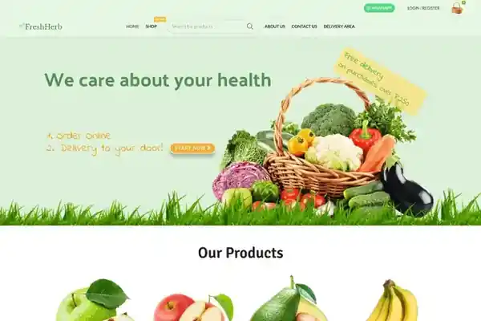

Screenshot archiviato del progetto, dato che il sito non è più online.
Contesto
Il sito è stato realizzato da zero sulla base del brief del cliente. Successivamente il cliente ha interrotto l’attività e il sito è stato rimosso dalla pubblicazione.
La sfida
Tradurre un brief iniziale in una presenza web completa, gestendo autonomamente setup tecnico, design e manutenzione.
Il mio contributo
- Setup di dominio/hosting, installazione WordPress e configurazione di tema e plugin.
- Progettazione delle pagine e adattamento responsive.
- Gestione tecnica, sicurezza, backup e manutenzione durante il periodo di attività.
- Conservazione della documentazione visiva dopo la chiusura del sito.
Risultato / consegna
Un progetto completo consegnato e gestito durante il periodo di attività del cliente, oggi presentato come progetto archiviato.
Il case study descrive esclusivamente il lavoro svolto da me nel periodo indicato. Dove il mio contributo era solo SEO, questo è dichiarato esplicitamente.